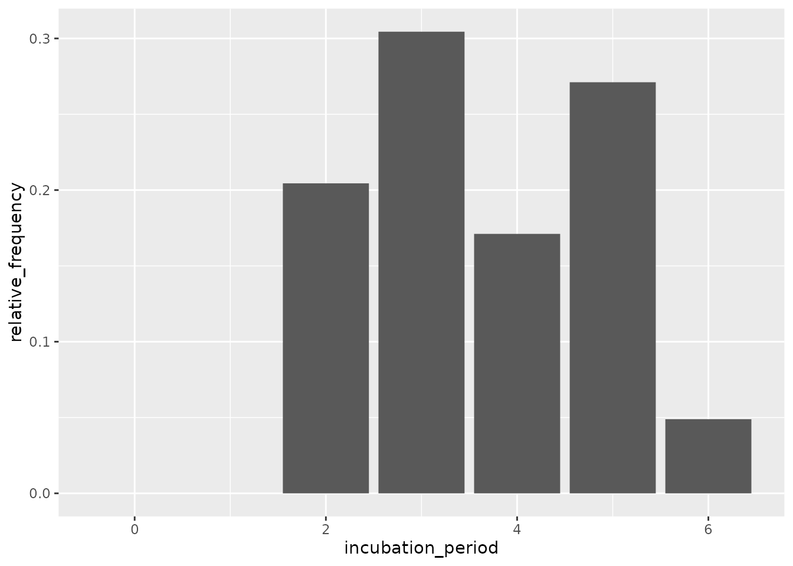
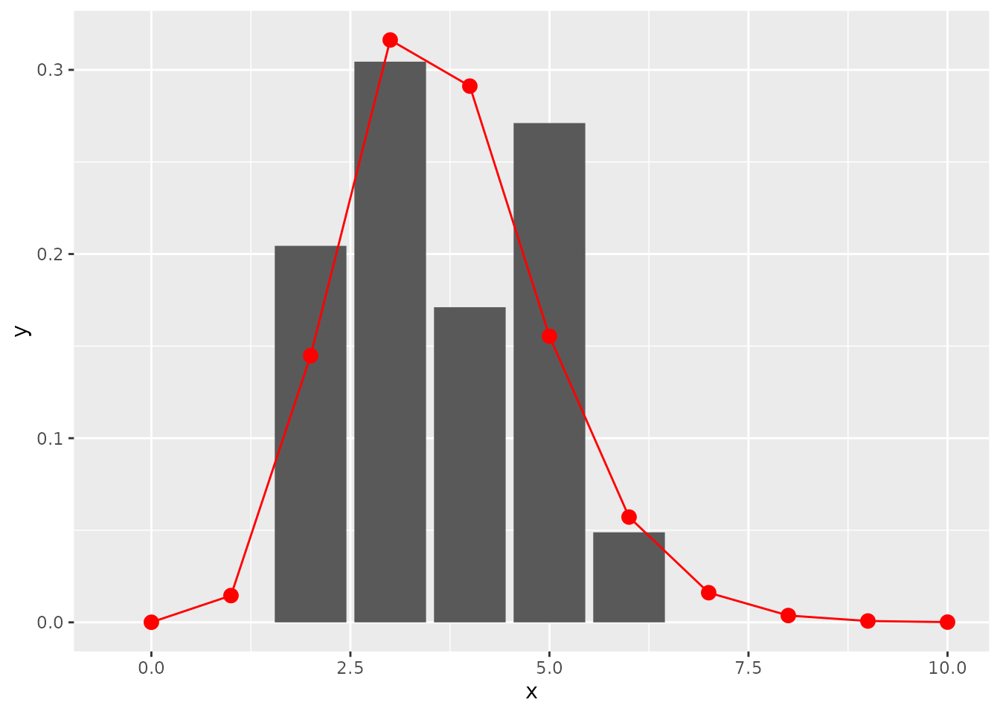

vignettes/estimate_incubation.Rmd
estimate_incubation.RmdThis package contains two functions useful to compute the incubation
period distribution from outbreak data. The inputs needed for each
patient are given as a data.frame or linelist
object and must contain:
The function empirical_incubation_dist() computes the
discrete probability distribution by giving equal weight to each
patient. Thus, in the case of N patients, the
n possible exposure dates of a given patient get the
overall weight 1/(n*N). The function returns a data frame
with column incubation_period containing the different
incubation periods with a time step of one day and their
relative_frequency.
The function fit_gamma_incubation_dist() takes the same
inputs, but directly samples from the empirical distribution and fits a
discrete gamma distribution to it by the means of
fit_disc_gamma.
Load environment:
Make a linelist object containing toy data with several possible exposure dates for each case:
ll <- sim_linelist(15)
x <- 0:15
y <- distcrete("gamma", 1, shape = 12, rate = 3, w = 0)$d(x)
mkexposures <- function(i) {
i - sample(x, size = sample.int(5, size = 1), replace = FALSE, prob = y)
}
exposures <- sapply(ll$date_of_onset, mkexposures)
ll$dates_exposure <- exposures
print(ll)
#> id date_of_onset date_of_report gender outcome
#> 1 1 2020-01-30 2020-02-08 female recovery
#> 2 2 2020-02-18 2020-02-20 female recovery
#> 3 3 2020-02-06 2020-02-15 male death
#> 4 4 2020-01-19 2020-01-27 male recovery
#> 5 5 2020-01-03 2020-01-13 male recovery
#> 6 6 2020-02-21 2020-02-28 male recovery
#> 7 7 2020-01-20 2020-01-26 female recovery
#> 8 8 2020-01-20 2020-01-28 male recovery
#> 9 9 2020-01-18 2020-01-25 male recovery
#> 10 10 2020-01-04 2020-01-12 female death
#> 11 11 2020-01-19 2020-01-25 female recovery
#> 12 12 2020-01-11 2020-01-15 male recovery
#> 13 13 2020-01-17 2020-01-28 female recovery
#> 14 14 2020-02-09 2020-02-20 male recovery
#> 15 15 2020-02-22 2020-02-25 female recovery
#> dates_exposure
#> 1 18287
#> 2 18305
#> 3 18295, 18296, 18294, 18293, 18292
#> 4 18279, 18277, 18276, 18278
#> 5 18261
#> 6 18309, 18308
#> 7 18277, 18278, 18279, 18276
#> 8 18274, 18277, 18275
#> 9 18275, 18276, 18273, 18277
#> 10 18262
#> 11 18277, 18278, 18275, 18276, 18274
#> 12 18268, 18269, 18270
#> 13 18274, 18276, 18275
#> 14 18299
#> 15 18307, 18311Empirical distribution:
incubation_period_dist <- empirical_incubation_dist(ll, date_of_onset, dates_exposure)
print(incubation_period_dist)
#> # A tibble: 8 × 2
#> incubation_period relative_frequency
#> <dbl> <dbl>
#> 1 0 0
#> 2 1 0.0167
#> 3 2 0.188
#> 4 3 0.288
#> 5 4 0.243
#> 6 5 0.143
#> 7 6 0.0656
#> 8 7 0.0556
ggplot(incubation_period_dist, aes(incubation_period, relative_frequency)) +
geom_col()
Fit discrete gamma:
fit <- fit_gamma_incubation_dist(ll, date_of_onset, dates_exposure)
print(fit)
#> $mu
#> [1] 4.28024
#>
#> $cv
#> [1] 0.3272495
#>
#> $sd
#> [1] 1.400706
#>
#> $ll
#> [1] -1744.428
#>
#> $converged
#> [1] TRUE
#>
#> $distribution
#> A discrete distribution
#> name: gamma
#> parameters:
#> shape: 9.33774779008044
#> scale: 0.458380333888898
x = c(0:10)
y = fit$distribution$d(x)
ggplot(data.frame(x = x, y = y), aes(x, y)) +
geom_col(data = incubation_period_dist, aes(incubation_period, relative_frequency)) +
geom_point(stat="identity", col = "red", size = 3) +
geom_line(stat="identity", col = "red")
Note that if the possible exposure dates are
consecutive for all patients then
empirical_incubation_dist() and
fit_gamma_incubation_dist() can take date ranges as inputs
instead of lists of individual exposure dates (see help for
details).